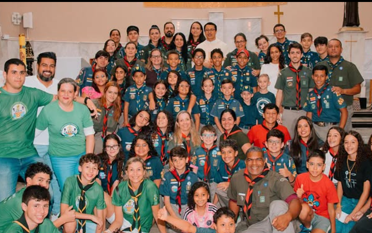
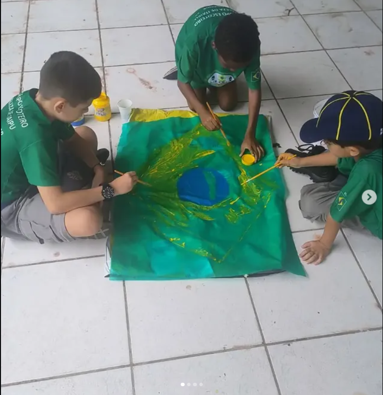
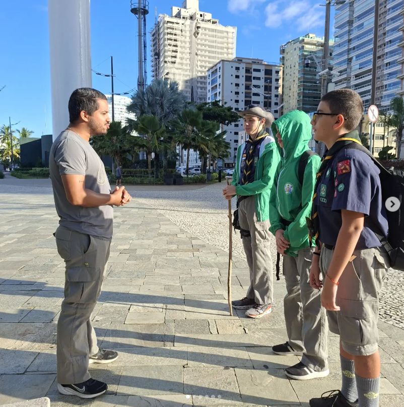

Promovemos o desenvolvimento jovem através de valores, vida ao ar livre, liderança e serviço à comunidade no 455º GE Fortaleza de Itaipu.
O Escotismo é um movimento educacional não formal voltado para crianças e jovens, fundamentado no voluntariado e no compromisso comunitário. Com atividades práticas, promovemos a liderança, a autonomia e a consciência socioambiental em um ambiente seguro e acolhedor.
Através da vida em equipe, do trabalho ao ar livre e do aprendizado pela prática, desenvolvemos as dimensões física, intelectual, social, afetiva, espiritual e de caráter de cada integrante. Nossa missão diária é formar cidadãos conscientes e engajados, preparados para transformar positivamente suas realidades sob o nosso lema de estar Sempre Alerta.
Momentos de união, aprendizado prático e desenvolvimento ao ar livre com a nossa comunidade.

Encontros que fortalecem nossos laços de amizade, civismo e trabalho em equipe.

Atividades lúdicas e manuais que estimulam a criatividade, a cooperação e o amor à pátria.

Instruções ao ar livre na cidade, desenvolvendo disciplina, escuta ativa e responsabilidade.
Aprender brincando através do 'Livreto da Jângal' e atividades em equipe.
Vida ao ar livre, acampamentos, trabalho em patrulha e autonomia.
Superação de desafios, liderança e grandes jornadas de aventura.
Serviço à comunidade, cidadania ativa e construção do futuro.